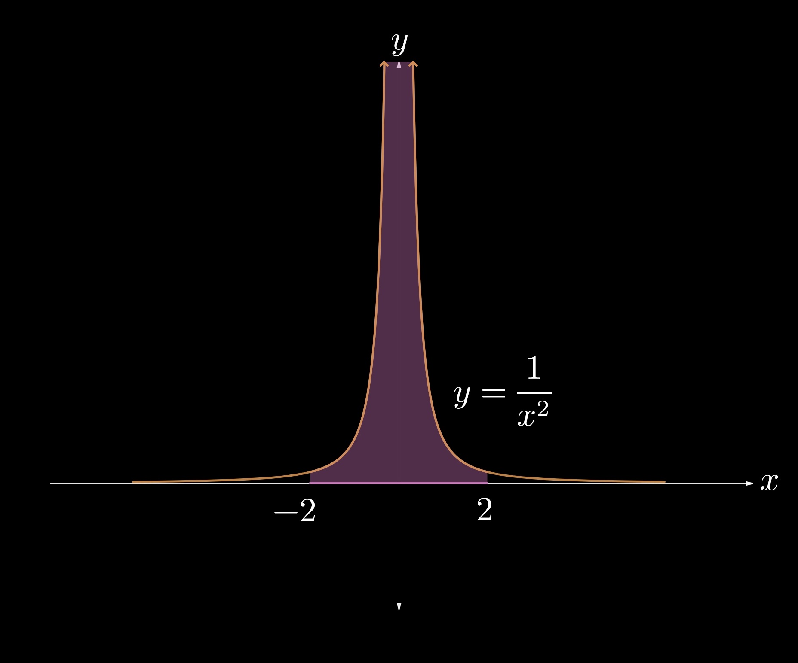

5.5 — Improper Integrals
Up to this point, we have covered integrals that featured finite bounds or were well-defined over the interval over which we integrated. In this section, however, we will discuss improper integrals—integrals that either (1) have unbounded limits or that (2) feature a discontinuity between its bounds. We call these Type I and Type II improper integrals, respectively.
Let us now analyze an example of a Type I improper integral. Consider, for example, the function \(\displaystyle f(x) = \frac{1}{x}\). Suppose that we want to evaluate \(\displaystyle \int_1^\infty \frac{1}{x} \, \textrm{d} x\). The process of doing so is to insert a variable for the upper bound and take the limit as it approaches infinity. Doing so, we obtain $$ \int_1^\infty \frac{1}{x} \, \textrm{d} x = \lim_{k \to \infty} \int_1^k \frac{1}{x} \, \textrm{d} x. $$
\((1)\)
We now take an antiderivative and apply the Fundamental Theorem of Calculus, as usual. We understand that an antiderivative of \(\displaystyle \frac{1}{x} \) is \(\ln|x|\) (we can drop the absolute value bars here because we are working with positive bounds.) We then get $$ \lim_{k \to \infty} \int_1^k \frac{1}{x} \, \textrm{d} x = \lim_{k \to \infty} \ln(x) \Big]_{1}^{k} $$ $$ \lim_{k \to \infty} \ln(k) - \ln(1) $$ $$ \lim_{k \to \infty} \ln(k) - 0. $$\((2)\)
It is clear that \(\displaystyle \lim_{k \to \infty} \ln(k)\) does not exist (it approaches infinity.) Thus, we state that the integral diverges: $$ \bbox[border: 2px solid white, 2pt]{\int_1^\infty \frac{1}{x} \, \textrm{d} x \, \, \, \textrm{diverges}.} $$\((3)\)
$$\tag*{$\blacksquare$}$$If one of the listed limits does not exist, then the respective integral diverges.
Evaluate the following integral: $$ \int_1^\infty \frac{1}{x^2} \, \textrm{d} x. $$
We will introduce a variable \(k\) that approaches infinity and substitute it for the upper limit of the integral. We then have $$ \lim_{k \to \infty} \int_1^k \frac{1}{x^2} \, \textrm{d} x. $$
\((1)\)
Taking an antiderivative, we obtain $$ \lim_{k \to \infty} \frac{-1}{k} \Big]_1^k $$ $$ = \lim_{k \to \infty} \frac{-1}{k} + \frac{1}{1} $$ $$ = 0 + 1 $$\((2)\)
$$ \int_1^\infty \frac{1}{x^2} \, \textrm{d} x = \bbox[border: 2px solid white, 2pt]{1.} $$\((3)\)
$$\tag*{$\blacksquare$}$$Evaluate the following integral: $$ \int_1^\infty \frac{1}{\sqrt{x}} \, \textrm{d} x. $$
We will introduce a variable \(k\) for the upper bound. Taking the limit as \(k\) approaches infinity, we get $$ \lim_{k \to \infty} \int_1^k \frac{1}{\sqrt{x}} \, \textrm{d} x. $$
\((1)\)
Taking an antiderivative, we obtain $$ \lim_{k \to \infty} 2 \sqrt{x} \Big]_1^k $$ $$ = \lim_{k \to \infty} 2 \sqrt{k} - 2(1) $$ $$ = \lim_{k \to \infty} 2 \sqrt{k} - 2 $$\((2)\)
\(\displaystyle \lim_{k \to \infty} 2 \sqrt{k} \to \infty \), so $$ \bbox[border: 2px solid white, 2pt]{\int_1^\infty \frac{1}{\sqrt{x}} \, \textrm{d} x \, \, \, \textrm{diverges}.} $$\((3)\)
$$\tag*{$\blacksquare$}$$We now observe a paradoxical fact: Consider the family of integrals \(\displaystyle \int_a^\infty \frac{1}{x^p} \, \textrm{d} x \), where \(a > 0\) and \(p\) is a constant.
As you may verify, if \(p \leq 1\), then \(\displaystyle \int_a^\infty \frac{1}{x^p} \, \textrm{d} x \) diverges. If \(p > 1\), then \(\displaystyle \int_a^\infty \frac{1}{x^p} \, \textrm{d} x \) converges. We can see that \(\displaystyle \int_1^\infty \frac{1}{x^1} \, \textrm{d} x \) diverges, but \(\displaystyle \int_1^\infty \frac{1}{x^{1.000000001}} \, \textrm{d} x \) converges!
Determine the values of \(n\) for which \(\displaystyle \int_1^\infty \frac{1}{7 x^{3n - 4}} \, \textrm{d} x \) converges.
We can rewrite the integral as $$ \frac{1}{7} \int_1^\infty \frac{1}{ x^{3n - 4}} \, \textrm{d} x. $$
\((1)\)
We know that, to obtain convergence, the integral must be in the form $$ \int_a^\infty \frac{1}{x^p} \, \textrm{d} x, $$ where \(p > 1\). Thus, we must set \(3n - 4\) to be greater than \(1\). Doing so, we obtain $$ 3n -4 > 1$$ $$ \bbox[border: 2px solid white, 2pt]{n > \frac{5}{3}.} $$ $$\tag*{$\blacksquare$}$$Let us now introduce Type II improper integrals.
Consider the integral \(\displaystyle \int_{-2}^2 \frac{1}{x^2} \, \textrm{d} x \), and attempt to evaluate it. You may try to compute it as $$ \int_{-2}^2 \frac{1}{x^2} \, \textrm{d} x $$ $$ = - \frac{1}{x} \Big]_{-2}^2 $$ $$ = -1; $$ however, this answer is NOT correct. These fallacious steps are, unfortunately, very common among students when evaluating integrals. The problem is that there is a vertical asymptote at \(x = 0\) ! Therefore, when we integrated over the interval \(\displaystyle [-2, 2]\), we were also including the unbounded area due to the asymptote, as shown in Fig. 5-5.1.
Fig. 5.5-1.
Instead, we must split the integral into two parts and analyze the behavior as they approach the asymptote. $$ \int_{-2}^2 \frac{1}{x^2} \, \textrm{d} x $$ $$ = \lim_{k \to 0^-} \int_{-2}^k \frac{1}{x^2} \, \textrm{d} x + \lim_{k \to 0^+} \int_k^2 \frac{1}{x^2} \, \textrm{d} x. $$
\((1)\)
We now obtain $$ \lim_{k \to 0^-} -\frac{1}{x} \Big]_{-2}^k + \lim_{k \to 0^+} -\frac{1}{x} \Big]_{k}^2 $$ $$ = \left(-\lim_{k \to 0^-} \frac{1}{k} - \frac{1}{2} \right) + \left(- \frac{1}{2} + \lim_{k \to 0^+} \frac{1}{k} \right) $$ $$ = - \frac{1}{4} -\lim_{k \to 0^-} \frac{1}{k} + \lim_{k \to 0^+} \frac{1}{k}. $$\((2)\)
Notice that \(\displaystyle -\lim_{k \to 0^-} \frac{1}{k}\) and \(\displaystyle \lim_{k \to 0^+} \frac{1}{k}\) both tend to positive infinity and thus do not exist. Therefore, $$ \bbox[border: 2px solid white, 2pt]{\int_{-2}^2 \frac{1}{x^2} \, \textrm{d} x \, \, \, \textrm{diverges}.} $$\((3)\)
$$\tag*{$\blacksquare$}$$If \(f\) is continuous on \([a,b)\) but discontinuous at \(x = b\), then
\(\displaystyle \int_a^b f(x) \, \textrm{d} x = \lim_{k \to b^-} \int_a^b f(x) \, \textrm{d} x \). If this limit does not exist, then \(\displaystyle \int_a^b f(x) \, \textrm{d} x\) diverges.If \(f\) is continuous on \((a,b]\) but discontinuous at \(x = a\), then
\(\displaystyle \int_a^b f(x) \, \textrm{d} x = \lim_{k \to a^+} \int_a^b f(x) \, \textrm{d} x \). If this limit does not exist, then \(\displaystyle \int_a^b f(x) \, \textrm{d} x\) diverges.Be extremely careful—whenever you see an integral from this point on, you must determine whether or not it is improper. Check for any vertical asymptotes or other discontinuous that indicate "improper integral."
Evaluate \(\displaystyle \int_0^6 \frac{1}{x^2 - 6x + 9} \, \textrm{d} x \) or show that it diverges.
Because \(\displaystyle x^2 - 6x + 9\) is a perfect square of \((x - 3)\), the integrand can be rewritten as $$ \int_0^6 \frac{1}{(x - 3)^2} \, \textrm{d} x. $$
\((1)\)
Let us now break the integral into two parts and analyze their behavior as they approach \(x = 3\): $$ \int_0^6 \frac{1}{(x - 3)^2} \, \textrm{d} x = \lim_{k \to 3^-} \int_0^k \frac{1}{(x - 3)^2} \, \textrm{d} x + \lim_{k \to 3^+} \int_k^6 \frac{1}{(x - 3)^2} \, \textrm{d} x. $$ Note that this is only true if these limits exist (i.e., each integral is convergent).\((2)\)
We now antidifferentiate to obtain, as you may verify, $$ \lim_{k \to 3^-} \frac{-1}{x-3} \Big|_0^k + \lim_{k \to 3^+} \frac{-1}{x-3} \Big|_k^6 $$ $$ = \left( \lim_{k \to 3^-} \frac{-1}{k-3} - \frac{1}{3} \right) + \left( -\frac{1}{3} + \lim_{k \to 3^+} \frac{1}{k-3} \right) $$ \(\displaystyle \lim_{k \to 3^-} \frac{-1}{x-3}\) and \(\displaystyle \lim_{k \to 3^+} \frac{1}{k-3}\) do not exist; therefore,\((3)\)
$$ \bbox[border: 2px solid white, 2pt]{\int_{0}^6 \frac{1}{x^2 - 6x + 9} \, \textrm{d} x \, \, \, \textrm{diverges}.} $$\((4)\)
$$\tag*{$\blacksquare$}$$Let \(f\) be defined as the piecewise function $$ f(x)= \begin{cases} \sin{\left(x - \frac{\pi}{2} \right)} & \text{for $x \leq 0 $} \\[2ex] 8 - x & \text{for $ x \gt 0. $} \end{cases} $$ Evaluate \(\displaystyle \int_{-\pi/2}^4 f(x) \, \textrm{d} x \) or show that it diverges.
We notice that \(f\) is discontinuous at \(x = 0\) (the left- and right-hand side limits are not equivalent.) Therefore, we rewrite the integral as $$ \int_{-\pi/2}^0 f(x) \, \textrm{d} x + \int_0^4 f(x) \, \textrm{d} x. $$ $$ = \int_{-\pi/2}^0 \sin{\left(x - \frac{\pi}{2}\right)} \, \textrm{d} x + \int_0^4 \left(8 - x\right) \, \textrm{d} x. $$
\((1)\)
We understand that both of these integrals are convergent (you may verify that \(\displaystyle \lim_{k \to 0^-} \int_{-\pi/2}^k \sin{\left(x - \frac{\pi}{2}\right)} \, \textrm{d} x\) and \(\displaystyle \lim_{k \to 0^+} \int_k^4 \left(8 - x\right) \, \textrm{d} x\) exist and are finite.)We can now evaluate each limit and sum them together.
$$ \int_{-\pi/2}^0 \sin{\left(x - \frac{\pi}{2}\right)} \, \textrm{d} x = \cos{\left(x - \frac{\pi}{2}\right)} \Big]_{-\pi/2}^0 $$ $$ = \cos{\left(-\frac{\pi}{2}\right)} - \cos{\left(- \pi\right)}$$ $$ = 0 - 1 $$ $$ = -1. $$ Furthermore, $$ \int_0^4 \left(8 - x\right) \, \textrm{d} x = \left( 8x - \frac{x^2}{2} \right) \Big]_0^4 $$ $$ = \left( 8(4) - \frac{(4)^2}{2} \right) - \left(8(0) - \frac{0^2}{2} \right) $$ $$ = 24 - 0 $$ $$ = 24. $$\((2)\)
Therefore, $$ \int_{-\pi/2}^4 f(x) \, \textrm{d} x = \bbox[border: 2px solid white, 2pt]{23.} $$\((3)\)
$$\tag*{$\blacksquare$}$$There are some functions that do not have an elementary antiderivative. However, it may still be possible to determine whether improper integrals of these functions converge or diverge by comparison testing. Consider, for example, \(\displaystyle \int_1^\infty \frac{\left|\sin(x)\right|}{x^{3/2}} \, \textrm{d} x\). If we wanted to determine its convergence, then there is an easier method than taking an antiderivative and calculating its value. (in this case, there does not even exist an elementary antiderivative!) Instead, we can make the statement that $$ 0 \lt \int_1^\infty \frac{\left|\sin(x)\right|}{x^{3/2}} \, \textrm{d} x \leq \int_1^\infty \frac{1}{x^{3/2}} \, \textrm{d} x $$ since \(\left|\sin(x)\right| \leq 1\) for all \(x\).
We know that \(\displaystyle \int_1^\infty \frac{1}{x^{3/2}} \, \textrm{d} x\) converges because it is a \(p\)-integral with \(\displaystyle p = \frac{3}{2}\). Thus, \(\displaystyle \int_1^\infty \frac{\left|\sin(x)\right|}{x^{3/2}} \, \textrm{d} x\) is bounded by a finite value and is therefore also convergent. $$\tag*{$\blacksquare$}$$
Generalizing this logic, if \(\displaystyle 0 \lt f(x) \leq g(x)\) and \(\displaystyle \int_a^\infty g(x) \, \textrm{d} x\) converges, then so does \(\displaystyle \int_a^\infty f(x) \, \textrm{d} x\). However, if \(\displaystyle 0 \lt g(x) \leq f(x)\) and \(\displaystyle \int_a^\infty g(x) \, \textrm{d} x\) diverges, then so does \(\displaystyle \int_a^\infty f(x) \, \textrm{d} x\). If \(\displaystyle f(x) \leq g(x) \lt 0\) and \(\displaystyle \int_a^\infty g(x) \, \textrm{d} x\) diverges, then so does \(\displaystyle \int_a^\infty f(x) \, \textrm{d} x\).
Determine whether \(\displaystyle \int_3^\infty \frac{\ln(x)}{x^{5/2}} \, \textrm{d} x \) converges or diverges.
We know that $$ 0 \lt \frac{\ln(x)}{x^{5/2}} \leq \frac{x}{x^{5/2}} $$ $$ 0 \lt \frac{\ln(x)}{x^{5/2}} \leq \frac{1}{x^{3/2}}. $$
\((1)\)
Therefore, $$ 0 \lt \int_3^\infty \frac{\ln(x)}{x^{5/2}} \, \textrm{d} x \leq \int_3^\infty \frac{1}{x^{3/2}} \, \textrm{d} x. $$
\((2)\)
We know that \(\displaystyle \int_3^\infty \frac{1}{x^{3/2}} \, \textrm{d} x\) is a \(p\)-integral with \(\displaystyle p = \frac{3}{2}\), so it is convergent. Therefore, because \(\displaystyle \int_3^\infty \frac{\ln(x)}{x^{5/2}} \, \textrm{d} x \) is bounded by two finite values, it is also convergent.
\((3)\)
$$\tag*{$\blacksquare$}$$Determine which of the following integrals are improper.
Integrals 1., 2., 4. , and 6. are improper.
$$\tag*{$\blacksquare$}$$
SECTION SUMMARY